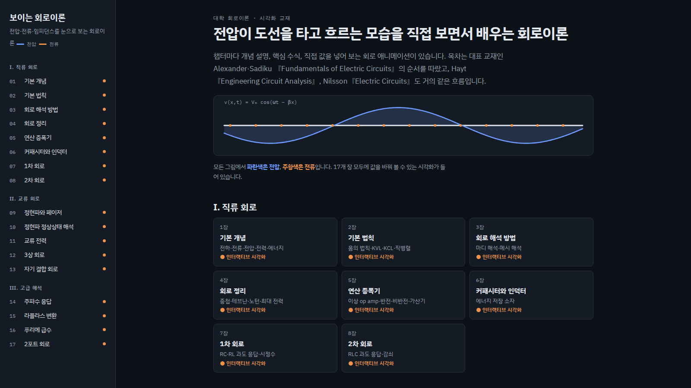

얼굴만 찍어 주세요. 사이트 화면은 제가 직접 조작하면서 녹화해서 말에 맞춰 넣을게요. 굵은 노란 글씨는 힘줘서 읽을 곳, /는 잠깐 쉬는 곳이에요. 사이트 화면과 그래픽은 모두 다크 모드로 맞춰요. 릴스 3개는 따로 찍고, 셋 다 마지막에 팔로우 + 댓글 "회로" → DM으로 사이트 문장이 들어가요.
강조해서 읽기연출(읽지 않음)
장면 1
오프닝 훅 · 전전공 소환
0:00–0:20
카메라를 똑바로 보고 한 박자 쉬었다가 시작. 첫 문장은 크고 또렷하게, 손가락으로 카메라 가리키기.
전국 전기전자공학과 대학생 여러분, / 잠깐만 주목해 주세요.
회로이론 들으면서 / 전압, 전류, 페이저, 임피던스… / 전부 수식으로만 보셨죠?
저도 그랬어요. / 그래서 / 전압이 도선을 타고 흐르는 걸 눈으로 보는 사이트를 / 직접 만들었습니다.

homech9
편집 · 첫 화면: 검은 배경에 "전국 전기전자공학과 주목" 큰 글씨 + 경고음 느낌 intro 효과음(두둥). "수식으로만"에서 v = iR, Z = R + jX 수식이 쏟아지는 팝업. "직접 만들었습니다"에서 다크 모드 홈 화면(도선 위 코사인파) 풀화면.
장면 2
사이트 소개
0:18–0:40
안녕하세요, 저도 회로이론 듣고 있는 전전공 대학생이에요.
이름은 보이는 회로이론이에요. / 대표 교재 순서대로 17개 장, / 직류 회로부터 교류, 라플라스, 푸리에, 2포트 회로까지 들어 있어요.
장마다 설명이랑 수식, / 그리고 직접 만져 보는 시각화가 하나씩 있어요. / 설치할 것 없이 링크만 누르면 바로 열려요.
home
편집 · 왼쪽 목차 1~17장 훑는 녹화. "17개 장" 숫자 강조.
장면 3
2장 · 옴의 법칙, KVL, KCL
0:40–1:08
제일 기본인 2장부터 볼게요.
도선 색이 진할수록 전위가 높고, / 주황 점이 흐르는 게 전류예요. / 저항을 키우면 점이 느려지죠.
오른쪽 막대를 보면 / 전원이 올린 전압이랑 저항에서 내려간 전압이 항상 같아요. / 이게 KVL이에요.
병렬로 바꾸면 / 마디에서 점이 두 갈래로 나뉘어요. / 들어온 만큼 나가는 것, KCL이죠.